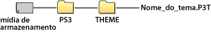

Configurações > Configurações de tema
Configurações de tema
Ajuste as configurações para personalizar a tela XMB™ e itens como o fundo de tela ou a fonte para o texto da tela.
Tema
Você pode ajustar as configurações para personalizar o design de ícones ou do fundo de tela exibidos na tela XMB™. O tema pode ser ajustado utilizando alguns dos seguintes métodos.
Selecionando um tema pré-instalado
Selecione um tema já pré-instalado no sistema PS3™.
Fazendo download de um tema para o sistema PS3™
Quando fizer o download de um tema da  (PlayStation®Store) ou utilizando
(PlayStation®Store) ou utilizando  (Navegador de Internet), ele será automaticamente instalado no sistema PS3™ após o término do download.
(Navegador de Internet), ele será automaticamente instalado no sistema PS3™ após o término do download.
Instalando um tema utilizando um disco de jogo ou software de vídeo disponível comercialmente em Blu-ray Disc (BD-ROM)
Para instalar e utilizar um arquivo de tema contido em um disco, selecione o ícone  em
em  (Jogo) e, então, selecione o arquivo de tema que deseja instalar. O tema será utilizado como tema do sistema automaticamente após o término da instalação.
(Jogo) e, então, selecione o arquivo de tema que deseja instalar. O tema será utilizado como tema do sistema automaticamente após o término da instalação.
Criando ou fazendo download de um tema em um PC
Quando você fizer download de um tema de um endereço Web ou criar um tema utilizando um PC, crie uma nova pasta chamada [PS3] - [THEME] na mídia de armazenamento e, então, salve o tema nesta pasta. Arquivos de tema devem ser salvos com a extensão [.P3T].

Para instalar o tema no armazenamento do sistema PS3™, conecte a mídia de armazenamento que contém o arquivo de tema para o sistema e, então, selecione  (Configurações) >
(Configurações) >  (Configurações de tema) > [Tema] > [Instalar].
(Configurações de tema) > [Tema] > [Instalar].
Dicas
- Um ícone que não faz parte do arquivo de tema será substituído por outro ícone no arquivo de tema ou permanecerá como o ícone padrão da tela XMB™.
- Se um arquivo de tema contiver diversos fundos de tela, o fundo de tela do tema irá mudar aleatoriamente.
- Há softwares de PC disponíveis que permitem que você crie seus próprios arquivos de tema para utilizar no sistema PS3™. (Também é necessário um software disponível comercialmente para a criação dos elementos gráficos.) Para mais informações, visite o site da SIE de sua região.
- Um adaptador USB (não incluído) é necessário para utilizar a mídia de armazenamento com alguns modelos do sistema PS3™.
Excluindo temas
Selecione o tema que deseja excluir, pressione o botão  e, então, selecione [Excluir].
e, então, selecione [Excluir].
Cor
Define a cor do plano de fundo da tela XMB™.
| Original | Selecione como o fundo de tela original / cor. |
|---|---|
| (cor / amostra de ) | Selecione uma cor para defini-la como a cor do fundo de tela. |
Fundo de tela
Selecione o fundo de tela baseado no tema ou na imagem selecionada como papel de parede em  (Foto) como o fundo de tela da tela XMB™.
(Foto) como o fundo de tela da tela XMB™.
| Brilho | Altera o brilho do fundo de tela. |
|---|---|
| Original | Selecione o tema original. |
| Clássico | Selecione o tema [Clássico]. |
| (nome do tema) | Selecione o fundo de tela do tema definido em [Tema]. |
| Papel de parede | Selecione a imagem selecionada como papel de parede em (Foto) para o fundo de tela. |
Fonte
Selecione o tipo de fonte utilizada na tela XMB™ ou nas mensagens em  (Amigos). Quando o idioma do sistema for definido como Coreano, Chinês simplificado ou Chinês tradicional, esta configuração não poderá ser selecionada.
(Amigos). Quando o idioma do sistema for definido como Coreano, Chinês simplificado ou Chinês tradicional, esta configuração não poderá ser selecionada.
Dica
As fontes que podem ser selecionadas variam dependendo do idioma do sistema utilizado.